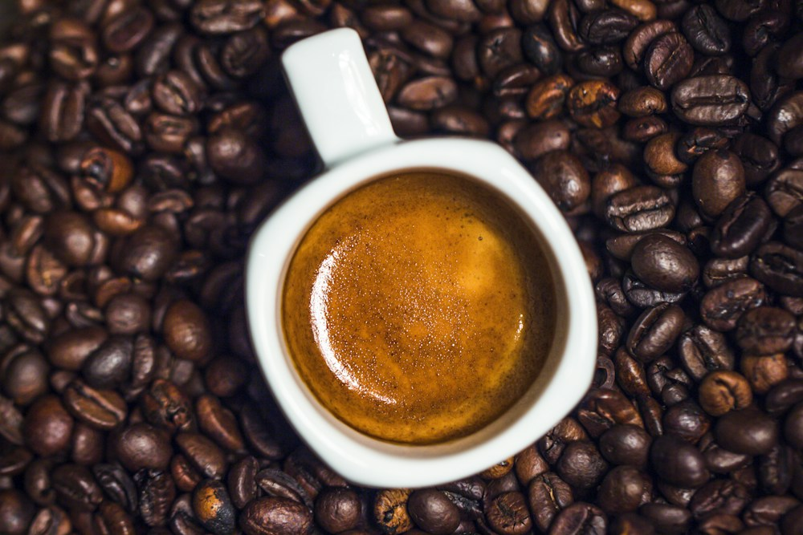
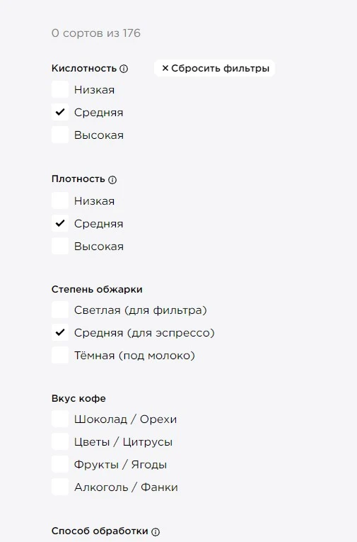
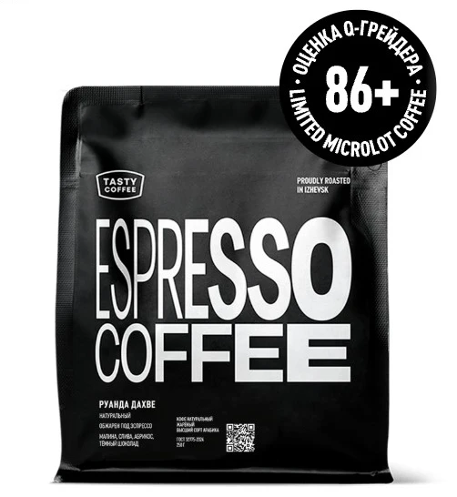

Как сейчас
В пустой выдаче покупателю приходится самому менять фильтры или начинать поиск заново. Здесь он может уйти, так и не открыв доступный товар.
Покупатель нажимает «Подобрать аналоги» на архивной карточке и попадает в пустую выдачу. Предлагаем прямо здесь показать доступный кофе с похожим вкусом.
Попробовать новый подбор ↓
Фрагмент пути покупателя от архивной карточки до выбора другого кофе.
В пустой выдаче покупателю приходится самому менять фильтры или начинать поиск заново. Здесь он может уйти, так и не открыв доступный товар.
При нуле совпадений показать доступный лот и объяснить сходство и различия. Если подходящего лота нет, дать прямой переход в каталог эспрессо.


Переключите сценарий. Выдача обновляется сразу. Данные демонстрационные, наличие Дахве относится к дате исследования.
Для интерактивного просмотра включите JavaScript.
Предлагаем пилот на архивных карточках, где строгий подбор даёт ноль. Сравним текущий экран и экран с объяснимой заменой среди таких сессий. Частота пустых выдач, доля уходов и потерянная выручка пока неизвестны.
Продолжил ли покупатель выбор после пустой выдачи.
Заинтересовал ли предложенный кофе настолько, чтобы его выбрать.
Изменилась ли выручка на сессию с пустым строгим подбором.
Первый шаг пилота. Выбрать архивные карточки с пустой выдачей, проверить для них доступные альтернативы и установить базовую конверсию до запуска теста.
Открыть сценарий подбора ↑В брифе проверяли публичную выдачу Москвы без входа. Сертао дал ноль, Амбелла Пайл — три результата, Изабелла Рейс и Отавио Рейс — по одному. Выдачу по трём остальным карточкам независимо не перепроверили.
Исходные условия: средняя кислотность, средняя плотность, обжарка для эспрессо, обработка «Фанки» и «Другой». Добавление натуральной обработки, снятие плотности и отключение обработки по отдельности оставили ноль. По брифу, расширение кислотности показало Тайру.
Карточка Сертао · Исходная выдача
Сертао. Эспрессо, абрикос, изюм, тёмный шоколад. Натуральный фанки.
Дахве. Эспрессо, малина, слива, абрикос и тёмный шоколад. Натуральная обработка. На 24 ноября 2026 года карточка показывала заказ в Москве. Категории плотности и кислотности остаются неизвестными.
Тайра. Эспрессо, ежевика, клубника, банан и кола. Инфьюзд. Вкусовое сходство с Сертао слабее.
Карточка Дахве · Карточка Тайры
Частота пустых выдач, уход покупателей и эффект на выручку остаются вопросами для пилота.
Локальная демонстрация использует сохранённые данные. Правило автоматического подбора для всего каталога ещё предстоит проверить.
Автоматическая проверка охватывает все три состояния, повторное переключение и адреса ссылок. Независимая приёмка первой версии прошла на чистой временной копии. В новой версии выдача обновляется сразу при выборе сценария.
Переходы на внешний сайт и внешний вид в реальном браузере отдельно не подтверждены.